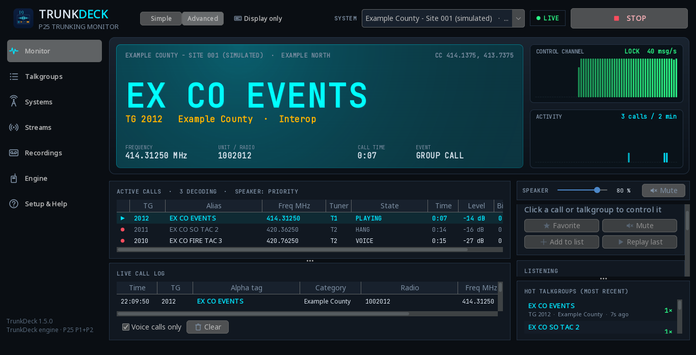
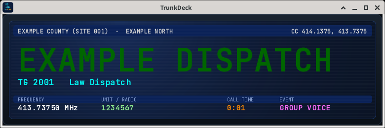
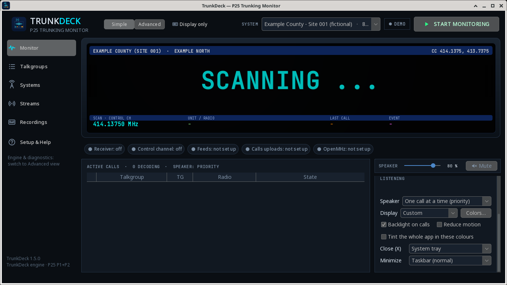
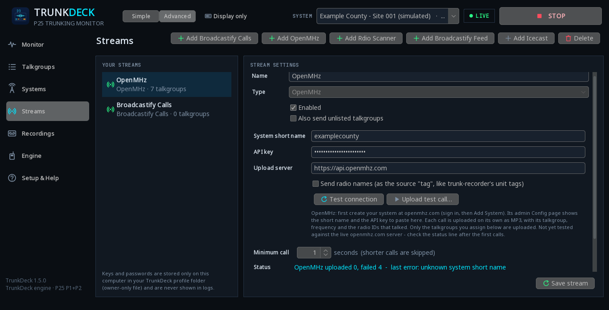
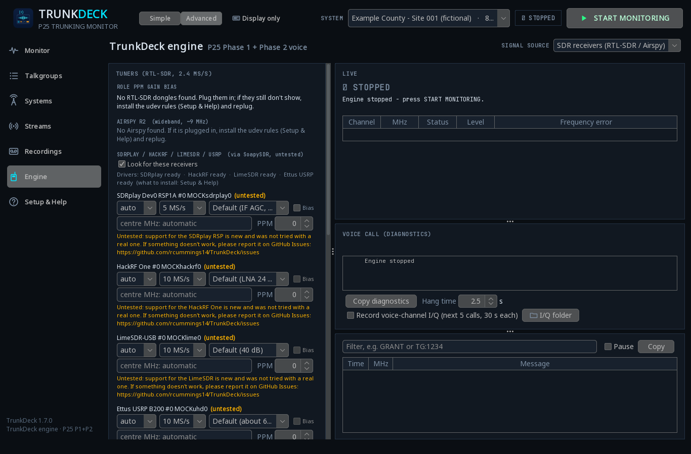

Your PC becomes a P25 trunked radio scanner.
TrunkDeck is a free, easy scanner app for Windows and Linux. It follows a digital trunked radio system, plays and records the calls, and can stream them to Broadcastify, OpenMHz or Rdio Scanner – all from one window, with no other radio software needed.
Free and open source (MIT) · Version 1.7.4.1 · Windows 10/11 64-bit and popular Linux distributions




Screenshots show a simulated signal and a made-up example system.
What it does
Built-in decoder
Decodes P25 Phase 1 and Phase 2 voice on its own. No SDRTrunk, SDR# or other radio software needed.
P25 conventional (untested)
Save a system of fixed channels (from RadioReference when it lists them, or by typing the name and the frequencies yourself, with an optional NAC). Press Start the same way as a trunked system. TrunkDeck listens on those channels and decodes the P25 voice. Encrypted calls are skipped. P25 conventional has not been tested on a real radio system yet. If something doesn't work, please report it on GitHub Issues.
Works with cheap receivers
Use an RTL-SDR dongle or an Airspy. Several dongles can work together to catch more calls.
Share your audio
Optional streaming to Broadcastify Calls, Broadcastify Feeds (or any Icecast server), OpenMHz and Rdio Scanner.
Quick setup from RadioReference
Sign in with your RadioReference Premium account, pick your system, and TrunkDeck fills in the channels and talkgroup names.
Looks like a real scanner
A big scanner-style display with colour themes (including an SDS-style look), backlight glow on calls and a scrolling SCANNING ticker.
Display only mode
Shrink the window to just the scanner display – keep it on top while you work. Double-click to get the full window back.
Hides in the tray
Close or minimize to the system tray and keep listening in the background.
Tunes itself
Measures how far your dongle is off frequency (PPM) and offers a one-click Apply button.
Your talkgroups, your way
Favorite, mute or record talkgroups – one at a time or many at once. Encrypted calls are skipped.
Every call recorded
Recordings of each call, a live call log and an activity graph. Double-click a saved call to play it in TrunkDeck; a live call pauses it.
Get started in 3 steps
- 1
Download & install
Get the Windows zip or Linux file from the download page. Run
Install.bat(Windows) or./install.sh(Linux). It fetches Java for you – no admin rights needed on Windows. - 2
Plug in a receiver
Connect your RTL-SDR or Airspy. On Windows, set its USB driver once with Zadig (WinUSB); on Linux the installer offers to set up USB access.
- 3
Pick a system & press Start
Choose your system (from RadioReference or by hand), import your talkgroups and press START MONITORING.
One-time extra: for sound, click Build from source… on the Engine page to build the voice codec on your PC. Without it, calls are followed but silent. The full guide is in the download too.
Supported receivers
- RTL-SDR dongles (RTL2832U) Tested
- Airspy R2 Tested
- SDRplay RSP1A / RSP1B / RSP2 / RSPdx / RSPduo Untested
- HackRF One Untested
- LimeSDR (USB / Mini) Untested
- Ettus USRP (B2xx, N2xx, X3xx…) Untested
SDRplay, HackRF, LimeSDR and USRP work through SoapySDR (installed separately). They are new in 1.7.0 and haven't been tried with real hardware yet. If yours doesn't work, please report problems on GitHub Issues and include Copy diagnostics from the Engine page.
